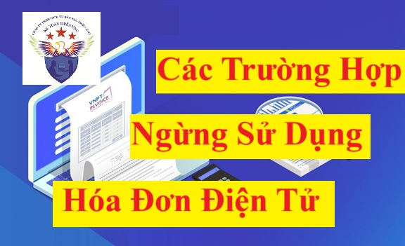

Các trường hợp ngừng sử dụng hóa đơn điện tử đang được quy định tại Khoản 12 Điều 1 Nghị định 70/2025/NĐ-CP (có hiệu lực từ ngày 01/06/2025) sửa đổi bổ sung khoản 1, điều 16 của Nghị định 123/2020/NĐ-CP như sau:
Doanh nghiệp, tổ chức kinh tế, tổ chức khác, hộ kinh doanh, cá nhân kinh doanh thuộc các trường hợp sau ngừng sử dụng hóa đơn điện tử có mã của cơ quan thuế, ngừng sử dụng hóa đơn điện tử không có mã của cơ quan thuế, ngừng sử dụng hóa đơn điện tử khởi tạo từ máy tính tiền:
1) Doanh nghiệp, tổ chức kinh tế, tổ chức khác, hộ kinh doanh, cá nhân kinh doanh chấm dứt hiệu lực mã số thuế;
2) Doanh nghiệp, tổ chức kinh tế, tổ chức khác, hộ kinh doanh, cá nhân kinh doanh thuộc trường hợp cơ quan thuế xác minh và thông báo không hoạt động tại địa chỉ đã đăng ký;
3) Doanh nghiệp, tổ chức kinh tế, tổ chức khác, hộ kinh doanh, cá nhân kinh doanh tạm ngừng kinh doanh; tạm ngừng sử dụng hóa đơn điện tử theo văn bản gửi cơ quan thuế (Mẫu 01/ĐKTĐ-HĐĐT Phụ lục IA ban hành kèm Nghị định này); hộ kinh doanh, cá nhân kinh doanh chuyển đổi phương pháp từ kê khai sang phương pháp khoán hoặc nộp thuế theo từng lần phát sinh theo thông báo của cơ quan thuế;
4) Doanh nghiệp, tổ chức kinh tế, tổ chức khác, hộ kinh doanh, cá nhân kinh doanh có thông báo của cơ quan thuế về việc ngừng sử dụng hóa đơn điện tử để thực hiện cưỡng chế nợ thuế;
5) Trường hợp có hành vi sử dụng hóa đơn điện tử để bán hàng nhập lậu, hàng cấm, hàng giả, hàng xâm phạm quyền sở hữu trí tuệ, bị cơ quan có thẩm quyền phát hiện và thông báo cho cơ quan thuế;
6) Trường hợp có hành vi lập hóa đơn điện tử phục vụ mục đích bán khống hàng hóa, cung cấp dịch vụ để chiếm đoạt tiền của tổ chức, cá nhân bị cơ quan có thẩm quyền phát hiện, khởi tố và thông báo cho cơ quan thuế; cơ quan công an, viện kiểm sát, tòa án có văn bản đề nghị cơ quan thuế ngừng sử dụng hóa đơn điện tử của tổ chức, cá nhân nêu trên;
7) Trường hợp cơ quan đăng ký kinh doanh, cơ quan nhà nước có thẩm quyền yêu cầu doanh nghiệp tạm ngừng kinh doanh ngành, nghề kinh doanh có điều kiện khi phát hiện doanh nghiệp không có đủ điều kiện kinh doanh theo quy định của pháp luật hoặc trường hợp cơ quan có thẩm quyền phát hiện và thông báo cho cơ quan thuế người nộp thuế có hành vi vi phạm pháp luật về thuế và hóa đơn;
8) Doanh nghiệp, tổ chức kinh tế, tổ chức khác, hộ kinh doanh, cá nhân kinh doanh đang áp dụng hóa đơn điện tử khởi tạo từ máy tính tiền có thay đổi ngành nghề kinh doanh dẫn đến không đáp ứng điều kiện sử dụng hóa đơn điện tử khởi tạo từ máy tính tiền theo quy định tại khoản 1 Điều 11 Nghị định này thì cơ quan thuế ra thông báo người nộp thuế ngừng sử dụng hóa đơn điện tử khởi tạo từ máy tính tiền;

9) Trong quá trình thanh tra, kiểm tra, nếu cơ quan thuế xác định người nộp thuế có hành vi trốn thuế, người nộp thuế được thành lập để thực hiện mua bán, sử dụng hóa đơn điện tử không hợp pháp hoặc sử dụng không hợp pháp hóa đơn điện tử để trốn thuế theo quy định thì cơ quan thuế ban hành thông báo ngừng sử dụng hóa đơn điện tử; người nộp thuế bị xử lý theo quy định của pháp luật theo trình tự quy định tại điểm c khoản 2 Điều này;
10) Trường hợp người nộp thuế thuộc diện rủi ro rất cao theo mức độ rủi ro người nộp thuế thì cơ quan thuế thực hiện ngừng sử dụng hóa đơn điện tử theo quy định tại điểm d khoản 2 Điều này.
Kế Toán Diệu Tâm mời các bạn tham khảo thêm: